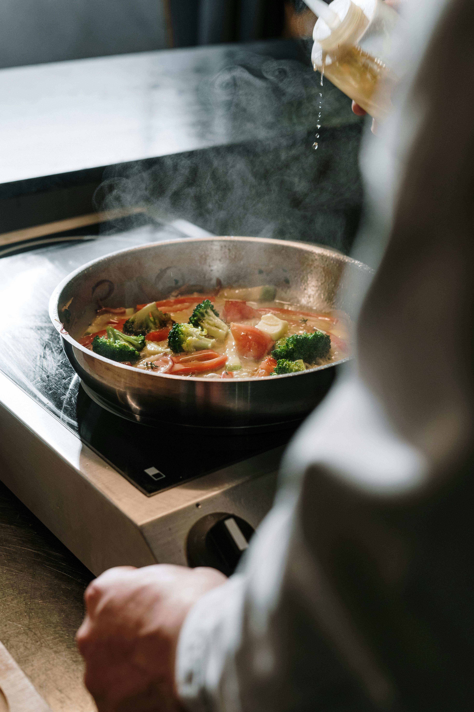

¡Bienvenido a la mesa!
Donde todos somos capaces de compartir, y descubrir, sabores.

¿De qué se trata este blog?
La cocina es un espacio dedicado a los apasionados de la
gastronomía en todo el mundo, por lo que, queríamos crear un
espacio seguro para compartir nuestras pasiones.
Aquí se intercambian, discuten y divulgan recetas tradicionales e
innovadoras, técnicas culinarias y los secretos de la buena
cocina.
¿Qué encontrarás aquí?
- Recetas detalladas paso a paso, para todos los niveles.
- Artículos sobre técnicas culinarias y cocina de autor.
- Guías para escoger los mejores ingredientes frescos.
- Reseñas de utensilios y libros de cocina imprescindibles.